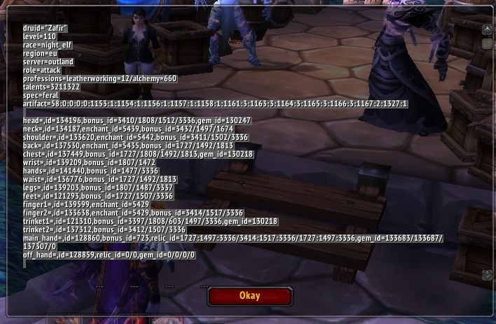
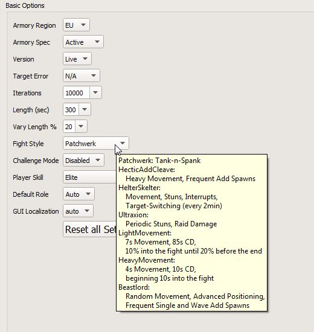
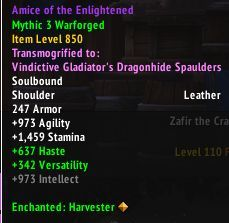
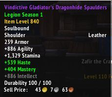
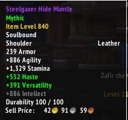
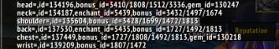
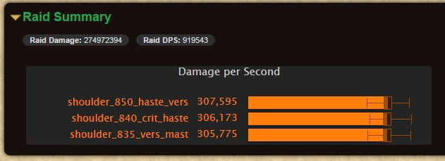
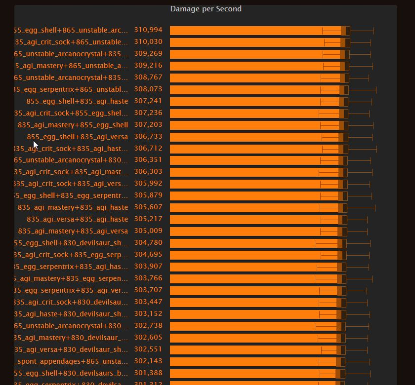
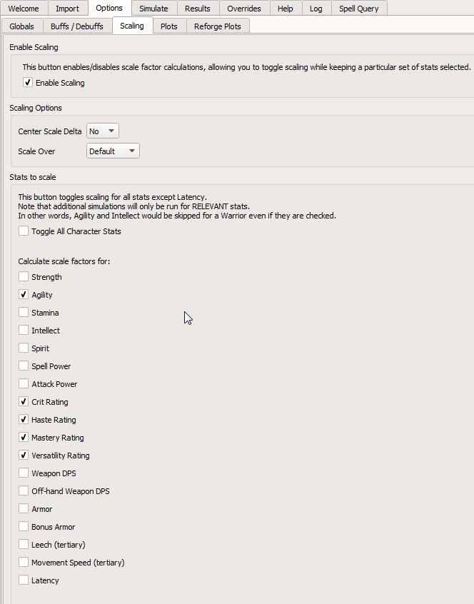
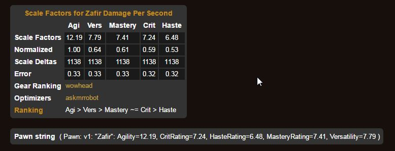

Ez a rövid útmutató a SimulationCraft nevű eszközt fogja bemutatni, illetve azt, hogy a használatával hogyan tudjuk a számunkra elérhető felszerelésekből a lehető legjobbakat kiválasztani. Ez sokszor nem triviális, nem feltétlenül a nagyobb item level számít, továbbá sok esetben nem az ideális statokkal rendelkező itemet célszerű választani. Trinket-ek összehasonlítása is elég nehéz feladat, de erre is látunk példát majd. Az útmutatót a World of Warcraft 7.0.3 Patch-hez készítettem, level 110-es karakterekkel és a Legion kiegészítő felszereléseivel számoltam.
Először is be kell szereznünk a SimulationCraft legfrissebb változatát. Azért célszerű a legfrissebbet használni, mert folyamatos fejlesztés alatt van, hibajavítások érkeznek hozzá, illetve (főleg trinketeknél) sokszor máshogy számol dolgokat bizonyos esetekben. A programot erről a linkről töltsük le. Itt megemlíteném, hogy a program eléggé CPU-intenzív, és a memóriát is szereti, ezért a 64-bites változatot válasszuk.
Nem szükséges, de én tudom ajánlani a SimulationCraft nevű Addon-t, aminek a segítségével könnyedén tudjuk megfelelő formátumban exportálni a karakterünket; ez az addon főleg a gear összehasonlításoknál tudja megkönnyíteni az életünket, amikor már épp elvesznénk a bonusID számok között.
Amennyiben használjuk az addont, akkor lépjünk be a karakterre, amit akarunk sim-elni, és futtassuk a /simc parancsot. Ez megnyit egy ablakot, amiből ki tudjuk copy-zni az exportot (lásd kép). Ezt tegyük el egy fájlba, amit nevezzünk el profile.simc-nek. Ez a fájl tartalmazza a classunkat, talentjeinket, artifactunk traitjeit és a gearünket.

Amennyiben nem használjuk az addont, akkor az Import fülön tudjuk az Armory-ból beimportálni a karakterünket. Az Options-ben állítsuk át a régiót EU-ra. Sikeres import után átvált a program a Simulate fülre, ahol láthatjuk a karakterünket szöveges formában. Ezt kicopy-zva szintén célszerű egy külön fájlba eltenni a profilunkat.
Itt feltételezem, hogy van egy profile.simc fájlunk, benne az aktuális gear-ünkben levő karakterünk adataival.
Az Options fülön beállíthatjuk a Fight Style-t, azaz, hogy milyen típusú sim-et akarunk futtatni; két opciót érdemes használni, az egyik a Patchwerk, ami kifejezetten single target fight, a másik pedig a HecticAddCleave, ami aoe-s fight-ok szimulálására jó.

Ebben a példában azt tesszük fel, hogy van néhány, különböző stat-ú itemem, és szeretnénk megtudni, hogy melyiket érdemes használni a lehető legtöbb dps eléréséhez.
Konkrétan a Shoulder slot-ba keresem a legjobbat, és van három alternatívám:



A bal szélső shoulder van jelenleg equippelve, ezért ennek nem szükséges kiírni a simcraft export string-jét, mert benne van a profile.simc fájlunkban, keressük a shoulder= kezdetű sort:
shoulder=,id=133620,enchant_id=5442,bonus_id=3411/1502/3336
Ezt úgy kell értelmezni, hogy az id az item azonosítója, az enchant_id a rajta levő enchantnak (Harvester) az azonosítója, a bonus_id-k pedig a különböző nehézségi szintek, warforge, titanforge és secondary statok azonosítói. Ezeket elég nehéz magunktól kitalálni, azért érdemes használni az addont, mert az a pontos string-et adja, amivel tudunk sim-elni.
A másik két shoulder export stringjét úgy tudom előállítani, hogy in-game equippelem az itemet, majd a /simc paranccsal újragenerálom az exportot, és csak a shoulder= kezdetű sort copy-zom ki.

Célszerű felírni, hogy melyik item micsoda, mert össze lehet kavarodni. Miután kimásoltam mindkét item export stringjét valami ideiglenes fájlba, lépjünk be a SimulationCraft Simulate fülébe, ahol keressük a karakterünk nevével megegyező al-fület. Itt először töröljünk mindent ki.
A következőképp kellene kinéznie, hogy tudjuk futtatni a szimulációt; a pontos lépések ezután következnek:
#shoulders sim zafir_feral_1005.simc name=shoulder_850_haste_vers copy=shoulder_840_crit_haste shoulder=,id=137364,enchant_id=5442,bonus_id=1727/1492/1813 #http://www.wowdb.com/items/137364?bonusIDs=1727,1492,1813 copy=shoulder_835_vers_mast shoulder=,id=121133,enchant_id=5442,bonus_id=3432/1714/1627/1674 #http://www.wowdb.com/items/121133?bonusIDs=3432,1714,1627,1674
Itt a # karakterrel kezdődő sorok a kommentelt sorok, ezeket figyelmen kívül hagyja a program, szóval tetszőleges megjegyzéseket tudunk tenni.
Az első sorba írjuk be a korábban elmentett profil fájlnak a nevét. Ha nem a simcraft mappába mentettük, akkor másoljuk oda be, mert ott fogja keresni a program. A második sorba írjuk be, hogy az adott slot-ban az alapértelmezett felszerelésnek mi legyen a fedőneve. A szimulációban ez lesz ennek az összeállításnak a neve, ezért én úgy neveztem el, hogy slot_itemlevel_mainstat_secondarystat. Ez számomra elég beszédes, mindjárt meglátjuk, hogy miért.
A copy paranccsal egy másolatot tudunk készíteni az addig rendelkezésre álló profilból, amit egy másik néven el kell tenni, mintha egy változó lenne. Ezután írjuk be, hogy mit szeretnénk ebben a másolatban változtatni, konkrétan azt az item-et, amivel össze akarjuk hasonlítani a jelenleg equippeltet. Ezt ismételjük meg annyiszor, ahány itemet össze akarunk hasonlítani. Én bónusznak odaírtam a wowdb linkjét az itemnek (a wowhead linkek valamiért nem teljesen úgy működnek, és a bonus id-k is kicsit mások).
Amennyiben idáig megvagyunk, kattintsunk a jobb alsó sarokban a Simulate gomb-ra, ami után már csak idő kérdése, hogy megkapjuk az eredményeket. A feldolgozási idő függ a processzortól, meglehetősen meg tudja izzasztani a gépet. Az Options-ben le lehet venni, hogy ne az összes szálat használja, illetve az iterációk számát is le lehet venni 10000-ről, csak akkor pontatlanabb lesz a szimuláció.
Eredmény:

Az eredmény értelemszerűen egy elméleti, ideális körülmények közötti maximum teljesítmény, ami magában foglalja a flask használatát, pre-potizást és fight közbeni ideális időben történő potizást, raid buffokat, heroism-ot, stb. Ez azért is jó, mert mindig így szimulál, tehát pontosan össze lehet hasonlítani a tárgyakat. Persze mielőtt disenchantolnánk vagy kidobnánk a kukába a cuccokat, érdemes AOE fight-on is szimulálni, mert lehet, hogy ami ST-n über, AOE-n fos, és fordítva.
Ez egy kicsit komolyabb előkészületet igényel, tekintve, hogy trinket-ből kettő van equippelve, így nem trinketeket szimulálunk, hanem trinketek kombinációit.
A fent említett módon írjuk ki az összes trinketünk export string-jét, amit akarunk szimulálni. A matematikai magyarázatot félretéve fogadjuk el, ha pl. 4 trinketünk van, A, B, C, D, akkor mivel ezeket ismétlés nélkül hatféle módon tudjuk kombinálni: AB, AC, AD, BC, BD, CD, összesen 6 szimulációs profilt kell létrehozzunk.
Itt bekopizom, amit én használtam a trinketek összehasonlításához, nekem soksok trinketem volt, ezáltal nagyon sok kombinációm. Ehhez írtam egy python scriptet, ami legenerálta nekem a kombinációkat, mert lusta vagyok, mint a dög. A különböző kombinációkat úgy lehet beírni, hogy trinket1=..., és trinket2=....
Például valahogy így:
zafir_feral_1005.simc name=835_agi_crit_sock+855_egg_shell copy=835_agi_crit_sock+835_agi_mastery trinket1=,id=121310,bonus_id=3397/1808/603/1497/3336,gem_id=130218 trinket2=,id=134159,bonus_id=3432/605/1497/1674 copy=835_agi_crit_sock+850_spont_appendages trinket1=,id=121310,bonus_id=3397/1808/603/1497/3336,gem_id=130218 trinket2=,id=139325,bonus_id=1807/1472 copy=835_agi_crit_sock+865_unstable_arcanocrystal trinket1=,id=121310,bonus_id=3397/1808/603/1497/3336,gem_id=130218 trinket2=,id=141482,bonus_id=1477/3336 copy=835_agi_mastery+855_egg_shell trinket1=,id=134159,bonus_id=3432/605/1497/1674 trinket2=,id=137312,bonus_id=3412/1507/3336 copy=835_agi_mastery+850_spont_appendages trinket1=,id=134159,bonus_id=3432/605/1497/1674 trinket2=,id=139325,bonus_id=1807/1472 copy=835_agi_mastery+865_unstable_arcanocrystal trinket1=,id=134159,bonus_id=3432/605/1497/1674 trinket2=,id=141482,bonus_id=1477/3336 copy=855_egg_shell+850_spont_appendages trinket1=,id=137312,bonus_id=3412/1507/3336 trinket2=,id=139325,bonus_id=1807/1472 copy=855_egg_shell+865_unstable_arcanocrystal trinket1=,id=137312,bonus_id=3412/1507/3336 trinket2=,id=141482,bonus_id=1477/3336 copy=850_spont_appendages+865_unstable_arcanocrystal trinket1=,id=139325,bonus_id=1807/1472 trinket2=,id=141482,bonus_id=1477/3336
Az eredmény a következő lett:

Láthatjuk, nem célszerű túl hosszú neveket megadni, mert nem jól jeleníti meg, de a lényeget megkaptam, single target fight-okon a legjobb kombináció nekem a
ilvl 855 - Nightmare Egg Shell ilvl 865 - Unstable Arcanocrystallett. Trinketeknél fokozottan érdemes több féle fight-ot leszimulálni, mert nagyon nagy az eltérés közöttük.
A SimulationCraft még arra is jó, hogy megkapjuk, hogy a jelenlegi gearünk alapján melyik secondary statokra érdemes rágyúrni, Ehhez a Simulate fülben legyen csak a profilfájl neve, és az Options-ben a Scaling résznél pipáljuk be, hogy Enable Scaling, továbbá azokat a statokat, amiket szeretnénk (értelemszerűen Mage-nél nem kell a Strength meg az Agility).

Kattintsunk a Simulate gombra, majd az eredményeknél görgessünk lejjebb, és keressük a Results, Spec and Gear címkét, azon belül pedig a Scale factors for ... Damage Per Second részt. Itt táblázatos formában látjuk, hogy melyik stat mennyit ér.

Itt egy pillanatra megállnék, ugyanis az összes Feral dudu guide azt mondja, hogy
Agility (1) > Mastery (.64) > Critical Strike (.63) > Versatility (.60) > Haste (.50)
Ezzel szemben azt kaptam, hogy
Agility (1) > Vers (.64)> Mastery (.61) ~= Crit (.59) > Haste (.53)
A normalizált értékeket kell nézni. Mit is jelent ez? Azt, hogy a jelenlegi gear-emben többet ér 1 pontnyi versatility, mint a többi stat. Ez azért van, mert nem jó, ha egy statra ráállunk, hanem minden statból érdemes sokat összeszedni. Elmúlt már a WoD-os idő, amikor 40% crit-nél megállt a feral druida, mert incarnation alatt 100% crit volt úgy.
Remélem hasznos volt az útmutató, hajrá és sok dps-t kívánok nektek! :P